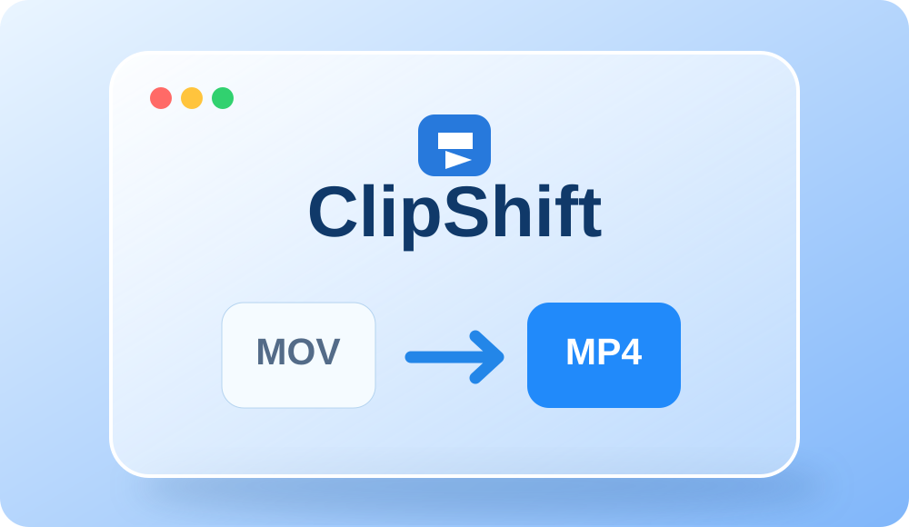

Automatisch
Native macOS-Ordneraktion statt dauerhafter 5-Sekunden-Abfrage.
Neue MOV-Bildschirmaufnahmen automatisch in MP4 umwandeln – lokal, ohne Cloud und ohne regelmäßige Hintergrundabfrage.
DMG-Build noch nicht als erfolgreich bestätigt. FFmpeg erforderlich.
Native macOS-Ordneraktion statt dauerhafter 5-Sekunden-Abfrage.
Das Original wird optional erst nach erfolgreicher Konvertierung gelöscht.
Deutsche und englische Oberfläche sowie Dokumentation.
Aufnahme über das macOS-Screenshot-Tool starten und beenden. ClipShift erkennt die neue MOV auf dem Schreibtisch und erstellt automatisch eine MP4.
Deutsche AnleitungAutomatically convert new macOS Desktop MOV screen recordings into widely compatible MP4 files. Local conversion with native Folder Actions and FFmpeg, no polling or subscription.
English instructions